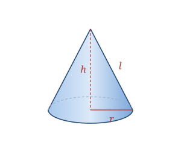

A cone is a solid with a circular base that narrows smoothly to a single point called the apex. In a right circular cone the apex sits directly above the center of the base. The distance from the apex straight down to the base center is the height h; the distance from the apex along the surface to the edge of the base is the slant height l.
Familiar cones include ice-cream cones, traffic cones, funnels, and party hats.
A cone is defined by the base radius r and height h; the slant height l follows from them.
| Surfaces | 1 flat circular base + 1 curved surface |
|---|---|
| Radius | r |
| Height | h (apex to base center) |
| Slant height | l = √(r² + h²) |
Slant height l = √(r² + h²)
Volume V = (1⁄3)πr²h
Lateral SA LSA = πrl
Total SA SA = πr² + πrl = πr(r + l)
Take a cone with radius r = 3 and height h = 4.
l = √(r² + h²) = √(9 + 16) = √25 = 5
V = (1⁄3)πr²h = (1⁄3)π(9)(4) = 12π ≈ 37.70
LSA = πrl = π(3)(5) = 15π ≈ 47.12
Total SA = πr(r + l) = π(3)(8) = 24π ≈ 75.40
A cone holds exactly one-third the volume of a cylinder with the same base and height — so it takes three full cones of water to fill a matching can.